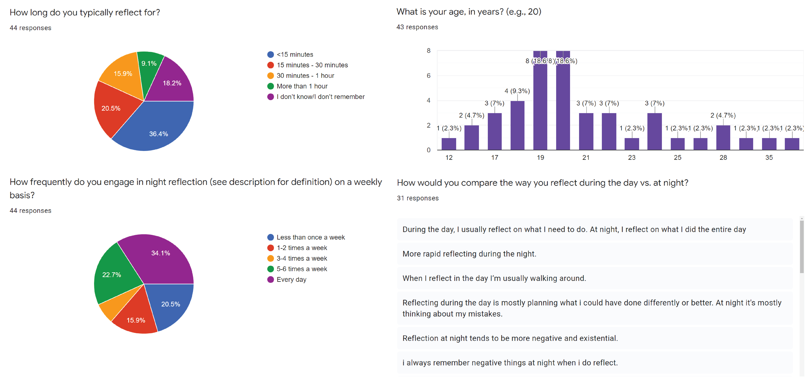

Night-Time Reflection Research
DURATION
Mar 2021 - Oct 2021
ORGANIZATIONS
Association of Computing Machinery,
SIGDOC Student Research Competition
ROLES/RESPONSIBILITIES
Individual: Data analysis, findings, design recommendations, publication
Collaborative: Individual interviews, survey distribution
Method
With help from Hannah Mei, Han Feng, and Sebastian Priss, I conducted research to write "Designing to Support Night-Time Reflection" which expands on existing literature about reflection design.
How can I support people engaging in night-time reflection to improve their reflection experience and support them in taking action upon them?
Context
Designing to support reflection is a relatively new field in HCI (Human-Computer Interaction), with minimal literature on what exactly reflection is and how best to design for it. In my research, I explore how designers could support reflection in a night-time context when people are preparing to sleep.
User Research
Interview
We first conducted four semi-structured interviews with people who have reflected at night to explore how they engage in night-time reflection and their emotional experience during reflection. *Names are in pseudonyms
Kyle
Kyle typically reflects at night once out of every three nights, usually triggered by anxiety or recent academic shortcomings.
"It's always after I do poorly on a midterm, I don't do any of my homework, my reflection is like, 'how did I get here?' 'what led to this?' 'why do I keep making the same mistakes?'"
Paul
Paul engages himself with his phone or TV until he is exhausted, which helps him fall asleep immediately. He tries to avoid reflecting because thinking about things he has to do fills him with anxiety.
"...anxious about the future and I [don't] like thinking about past events."
"I'm normally consumed with one issue that I have."
Toni
Toni engages in night-time reflection every day. If he is tired, he would spend between 15 to 30 minutes before falling asleep, but if not, he might spend as much as an hour reflecting. To prepare himself for sleep, he listens to guided meditation on his phone. He finds reflection to be a generally positive experience.
"I don't stress when I'm reflecting."
"I don't like it when [reflection] is too long."
Sean
Sean interacts with a lot of technology as he prepares to sleep, such as his phone and Amazon Alexa. He finds himself reflecting more when something upsetting recently happened.
"If there's something sad that happened... I try to reflect a bit more."
"If I don't reflect and I don't think about anything, it's easy for me to fall asleep."
We also conducted a survey over social media about experiences with reflection in the wider population. We received 44 responses from varying ages, but mostly from people between 18 and 22 years old.
We asked questions such as:
- Please rate your emotional experience when engaging in reflection.
- How would you compare the way you reflect during the day vs at night?
- Can you think of anything that could improve your night-time reflection experience?

Survey insights:
- Around 4 out of 5 respondents (79.5%) engage in night-time reflection at least once a week.
- Night-time reflection tends to be more negative compared to daytime reflection.
- The lack of stimuli (e.g., being in darkness, quietness) triggers reflection.
- Some participants purposely avoid reflection by engaging with their phone until they fall asleep.
Data Analysis
After open coding the interview transcripts, I organized codes into categories through affinity analysis. For the surveys, I performed quantitative analysis on the multiple choice and ranking questions and categorized salient open-ended responses with the interview codes. The interview and survey responses generally coincided, suggesting that the interview responses were fairly representative of the general opinion.
Findings
Varying attitudes toward technology use in bed
Many participants (28/43) felt that the use of technology before bed reduces their quality of sleep, yet some relied on their mobile phones to record thoughts from reflection. Most participants found that looking at bright screens distracted from their efforts to go to sleep. Interestingly, some participants turned to digital technology to intentionally avoid reflection as “the less [they] think when trying to sleep, the better.”
Difficulty in acting upon reflection takeaways
Some participants felt frustrated when they failed to act upon their reflection takeaways. When asked a question about negative experiences during reflection, one participant replied, “when I don’t act upon my reflections. . . I start to feel really disappointed in myself.”
Long reflection hinders efforts to sleep
Spending a long time reflecting reduced participants’ quality of sleep. When they fell asleep quickly, participants mentioned feeling happier and more relaxed in the following day. The possibility of spending an excessive time reflecting influenced participants to prefer avoiding reflection.
Triggers of night-time reflection
Night-time reflective behavior was triggered by a number of factors. Physical and mental fatigue allowed participants to fall asleep quickly. The environment when preparing to sleep, with lights turned off, silence, and isolation, also triggered reflective behavior as people “[didn’t] have anything else to do,” as one interviewee stated.
Design Recommendations
Based on these findings, I developed the following list of design recommendations to consider when designing to support night-time reflection.
Stray from screen-based interactions
Many participants (28/43) felt that the use of technology before bed reduces their quality of sleep, yet some relied on their mobile phones to record thoughts from reflection. Most participants found that looking at bright screens distracted from their efforts to go to sleep. Interestingly, some participants turned to digital technology to intentionally avoid reflection as “the less [they] think when trying to sleep, the better.”
Support users in acting upon reflection takeaways
Some participants felt frustrated when they failed to act upon their reflection takeaways. When asked a question about negative experiences during reflection, one participant replied, “when I don’t act upon my reflections. . . I start to feel really disappointed in myself.”
Consider the negative emotions that might come up in night-time reflection.
Spending a long time reflecting reduced participants’ quality of sleep. When they fell asleep quickly, participants mentioned feeling happier and more relaxed in the following day. The possibility of spending an excessive time reflecting influenced participants to prefer avoiding reflection.
Results/Next Steps
My research expands on the field of reflection design by detailing specific aspects to consider when designing a reflection-related intervention for the night-time context. I submitted my research to the SIGDOC Student Research Competition and it was accepted for publication at the 2021 SIGDOC conference ("Designing for Night-Time Reflection").
Reflection
What I learned:
- Purposely using phones until they exhaust themselves to sleep was surprising.
- Online surveys seem to be highly effective and insightful, especially during the pandemic.
- Being the sole researcher responsible for data analysis was surprisingly easier (due to having only one interpreter of the data) at the cost of potential bias.
If I did this again, I would...
- Research a more specific question: How can we design something that allows the user to record thoughts without it being intrusive to sleep (e.g., not taking notes on devices with bright screens)
- Interview people from different stages in life to see how attitudes toward sleep changes with age
- Perform affinity analysis as a group to reduce unintentional bias in my interpretation of responses.